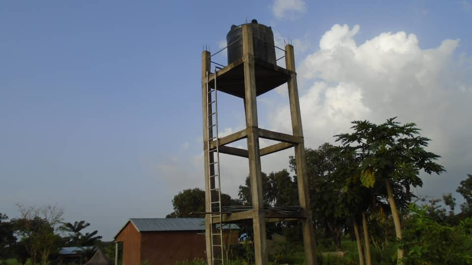

La formation des pasteurs
La formation des serviteurs de Dieu est à deux niveau: celui biblique qui les outils à l'appel auquel le Seigneur les a appelés et celui d'agropastoral pour répondre aux besoins de leurs familles et constituer des soutiens pour les communautés auxquelles ils sont appelés à servir.